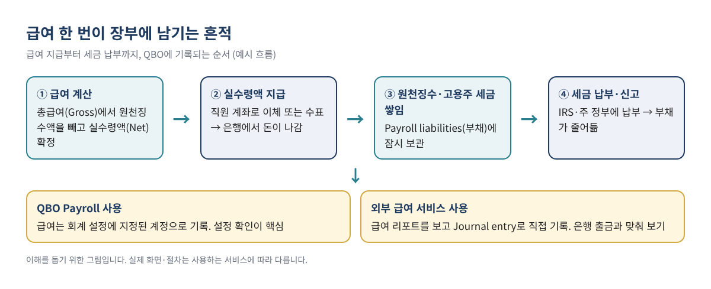
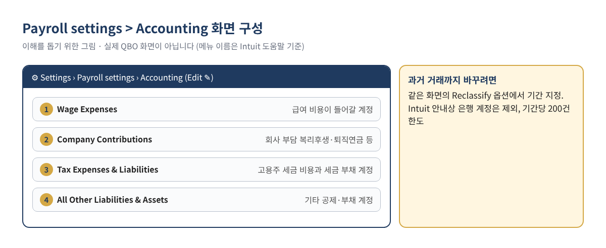
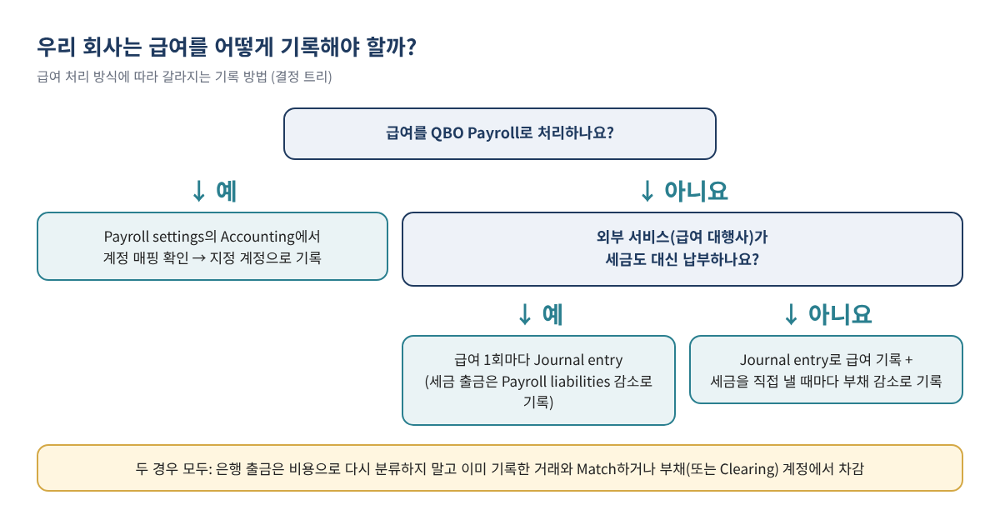
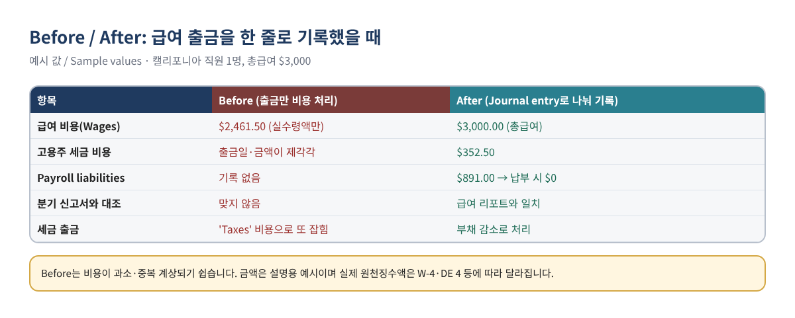

급여 출금을 '급여 비용' 한 줄로 넣고 있다면: QBO 직원 급여 기록법 (QBO Payroll·외부 급여 서비스, 네바다·캘리포니아·텍사스 비교)
직원 급여는 은행에서 돈이 나가는 순간만 보면 단순해 보입니다. 그런데 급여 한 번에는 직원에게 실제로 들어간 실수령액, 직원 급여에서 떼어 둔 세금, 회사가 따로 부담하는 세금이 함께 들어 있습니다. 은행 출금만 보고 "급여 비용"으로 분류하면 총급여보다 비용이 적게 잡히고, 나중에 세금 출금이 "Taxes" 비용으로 또 잡히면서 장부와 분기 급여 신고서가 맞지 않게 됩니다.
이 글은 QuickBooks Online(QBO)에서 급여를 기록하는 두 가지 경우, 즉 QBO Payroll로 급여를 돌리는 경우와 외부 급여 서비스(급여 대행사)를 쓰는 경우를 나눠 단계별로 정리합니다. 네바다·캘리포니아·텍사스에서 급여에 붙는 주(州) 세금이 어떻게 다른지도 각 주 공식 안내를 기준으로 비교했습니다. 시리즈 첫 글 QuickBooks Online 기초 가이드에서 짧게 소개한 급여 부분을 자세히 풀어 쓴 글입니다.
이 글은 교육용 일반 정보이며 세무·법률·재무 자문이 아닙니다.
이런 분께 필요합니다 ☐ 급여 대행사 출금을 은행 연결 화면에서 "Payroll expenses"로 한 줄씩 분류해 온 분 ☐ QBO Payroll을 쓰는데 급여 비용이 어느 계정에 쌓이는지 확인해 본 적 없는 분 ☐ 손익계산서의 급여 비용과 분기 급여 신고서(Form 941 등)의 금액이 맞지 않는 분 ☐ 네바다·캘리포니아·텍사스 중 두 곳 이상에 직원이 있거나 확장을 준비 중인 분
1. 먼저 원리: 급여 한 번은 세 덩어리로 나뉩니다
총급여(Gross pay)가 $3,000인 직원이 있다고 해 봅시다. 회사 입장에서 이 급여는 다음 세 덩어리로 나뉩니다.
- 실수령액(Net pay): 직원 계좌로 실제 이체되는 돈입니다. 은행에서 바로 나갑니다.
- 직원 원천징수액: 연방 소득세, 직원 몫의 Social Security·Medicare, 주에 따라 주 소득세나 주 장애보험료 등입니다. 직원 돈이지만 회사가 떼어 두었다가 정부에 대신 냅니다. 내기 전까지는 회사의 부채(Payroll liabilities)입니다.
- 고용주 부담 세금: 회사 몫의 Social Security·Medicare, 연방 실업세(FUTA), 주 실업보험료(SUI) 등입니다. 이것은 회사의 비용이면서, 낼 때까지는 역시 부채입니다.
따라서 제대로 기록하면 손익계산서에는 "총급여 + 고용주 세금"이 비용으로 잡히고, 원천징수액과 고용주 세금은 일단 부채로 쌓였다가 납부할 때 사라집니다. 세금 납부 출금은 비용이 아니라 부채 감소입니다.

2. 연방 급여세 기본값 (세 주 공통)
어느 주에 있든 연방 급여세는 같습니다. IRS Publication 15(2026년판)와 Topic 751 기준으로 정리하면 다음과 같습니다. 연방 소득세 원천징수액은 직원이 낸 Form W-4와 IRS Publication 15-T의 표에 따라 정해지므로 정해진 세율이 없습니다.
| 항목 | 직원 부담 | 고용주 부담 | 2026년 기준 |
|---|---|---|---|
| Social Security | 6.2% | 6.2% | 연 임금 $184,500까지 |
| Medicare | 1.45% | 1.45% | 임금 상한 없음 |
| Additional Medicare Tax | 0.9% (연 $200,000 초과분) | 없음 (고용주 매칭 없음) | $200,000을 넘는 급여 지급 시점부터 원천징수 |
| FUTA (연방 실업세) | 없음 | 6.0%, 주 실업세 공제 최대 5.4% → 일반적으로 0.6% (해당 연도에 주가 credit reduction state로 지정되면 공제가 줄어듦) | 직원 1인당 첫 $7,000 |
| 연방 소득세 | W-4·Pub 15-T에 따라 | 없음 | 직원마다 다름 |
Form 941(분기 연방 급여세 신고서)은 분기가 끝난 다음 달 말일까지, Form 940(연간 FUTA 신고서)은 연 1회 제출하며 Publication 15는 기한을 1월 31일로 안내합니다. 주말·공휴일에 따라 실제 기한이 달라질 수 있으니 해당 연도 Form 940 설명서에서 확인하세요. FUTA 공제율이 줄어드는 credit reduction state 해당 여부도 Pub 15와 Form 940 설명서에서 확인할 수 있습니다. 연방 급여세 예치는 EFT(전자 이체)로 해야 하며, 예치 주기(월별·반주별)는 IRS 기준에 따라 회사마다 정해집니다. 정확한 예치일은 Publication 15의 해당 항목을 확인하세요.
팁: IRS는 급여 대행사(PSP)나 신고 대리인을 쓰더라도 정확하고 제때 신고·납부할 책임이 고용주에게 남아 있다고 안내합니다. 대행사가 세금을 대신 낸다면 대행사 포털의 납부 내역과 QBO의 Payroll liabilities 잔액을 분기마다 대조해 두는 것이 좋습니다.
3. 주별 비교: 네바다·캘리포니아·텍사스
주 단위에서는 차이가 큽니다. 아래 표는 각 주 공식 기관 페이지에서 2026년 11월 22일 확인한 내용입니다. 회사별 실업보험 요율은 경험 요율(Experience rate)에 따라 매년 바뀌므로, 실제 요율은 주 정부가 보낸 요율 통지서를 기준으로 하세요.
이미 발표된 2027년 수치: 네바다 실업보험 과세 임금 상한 $45,400(DETR), 캘리포니아 SDI 1.4%(EDD). 2027년 급여부터는 이 값으로 설정이 바뀌었는지 확인하세요.
| 구분 | 네바다 (NV) | 캘리포니아 (CA) | 텍사스 (TX) |
|---|---|---|---|
| 주 개인 소득세 원천징수 | 없음 (주 세무국: 개인 소득세를 부과하지 않음) | 있음 (PIT, DE 4와 EDD 원천징수 표 기준) | 없음 (Texas.gov: 주 개인 소득세 없음) |
| 주 실업보험 담당 기관 | DETR 고용안정국(ESD) | EDD | Texas Workforce Commission(TWC) |
| 실업보험 과세 임금 상한 (2026) | 직원 1인당 $43,700 | 직원 1인당 $7,000 | 직원 1인당 $9,000 |
| 신규 고용주 실업보험 요율 | 2.95% (DETR 안내) | 3.4% (2~3년간, EDD 안내) | 2026년 2.70% (TWC 안내: 2026년은 업종 구분 없이 모두 2.70%) |
| 그 밖의 고용주 부담 항목 | Career Enhancement Program 0.05% (DETR 안내), Modified Business Tax (아래 설명) | ETT 0.1% (첫 $7,000) | TWC 요율 안에 여러 구성 요소가 합산됨 |
| 직원 부담 주 항목 | 확인한 공식 페이지에 해당 항목 안내 없음 | SDI 1.3% (2026년, 임금 상한 없음) | 확인한 공식 페이지에 해당 항목 안내 없음 |
| 분기 보고 | Employer's Quarterly Contribution and Wage Report, 분기 다음 달 말일까지 온라인 제출 | DE 9·DE 9C, 분기 다음 달 말일이 지나면 연체 (2026년 4분기는 2027년 2월 1일) | 분기 다음 달 말일까지 보고·납부, 전자 제출·전자 납부 의무 |
네바다 Modified Business Tax(MBT)는 실업보험법 적용 고용주에게 부과되는 주 세금으로, 총급여에서 회사가 낸 직원 건강보험료를 뺀 금액을 기준으로 분기마다 신고합니다. 주 세무국 페이지 기준 일반 사업체 세율은 1.17%(2023년 7월 1일부터 적용 중인 세율)이고, 처음 $50,000의 임금은 과세되지 않습니다. 비영리 단체, 인디언 부족, 지방 정부 기관, 가사 고용인만 둔 고용주는 예외이고, 금융기관과 광업은 1.554% 세율이 적용된다고 같은 페이지가 안내합니다. 세금이 없어도 신고서는 내야 한다고 안내하고 있으므로 해당 여부와 계산 기간은 주 세무국 안내로 확인하세요. QBO에서는 MBT를 직원 원천징수가 아닌 회사 비용 + 부채로 기록하는 것이 일반적입니다.
캘리포니아는 고용주가 UI와 ETT를, 직원이 SDI와 주 소득세(PIT)를 부담하는 구조라 QBO 계정도 "CA SUI/ETT"(고용주)와 "CA PIT/SDI"(직원 원천징수)로 나눠 두면 대조가 쉽습니다. 텍사스는 주 소득세 원천징수가 없고, 실업세는 직원 급여에서 떼지 않는 고용주 부담 세금이라고 TWC가 안내합니다.
4. QBO Payroll을 쓰는 경우: 계정 매핑부터 확인
QBO Payroll(Core·Premium·Elite)을 회계 기능과 함께 쓰면 급여는 회계 설정(Accounting preferences)에 지정된 계정으로 기록됩니다. Intuit는 QuickBooks가 급여 부채와 비용을 기록할 기본 계정을 자동으로 만들고, 이를 원하는 계정으로 바꿀 수 있다고 안내합니다. 처음 설정을 확인하지 않았다면 기본 계정으로 쌓이고 있을 수 있습니다.
- Settings ⚙ → Payroll settings로 들어갑니다. (메뉴 위치가 바뀌었다면 검색창에 "Payroll settings"를 입력해 찾으세요.)
- Accounting 옆의 Edit ✎를 선택합니다.
- 화면의 네 영역을 차례로 확인합니다: Wage Expenses(급여 비용), Company Contributions(회사 부담 복리후생 등), Tax Expenses & Liabilities(고용주 세금 비용과 세금 부채), All Other Liabilities & Assets(기타 공제·부채).
- 원하는 계정을 고른 뒤 Save, Done을 선택합니다.
- 이미 기록된 과거 급여 거래까지 바꾸려면 같은 화면의 Reclassify 옵션에서 시작일과 종료일을 지정합니다. Intuit 안내에 따르면 은행 계정은 바뀌지 않고, 한 기간에 200건까지 처리됩니다.

매핑을 끝낸 뒤에는 Reports → Standard reports의 Payroll 영역에서 Payroll Summary 또는 Payroll Summary by Employee 리포트를 열어(Intuit 도움말 기준이며 화면은 다를 수 있음), 같은 기간 손익계산서의 급여·급여세 비용과 비교해 보세요. Intuit 안내에 따르면 이 리포트의 날짜는 근무 기간이 아니라 급여 지급일(paycheck date) 기준입니다.
팁: 계정 번호(Account numbers) 기능을 켠 회사에서 급여가 엉뚱한 계정으로 들어간다면, Intuit는 계정 번호 설정을 먼저 확인하라고 안내합니다. 계정 정리 자체는 시리즈 1편 기초 잔액과 Chart of Accounts 세팅을 참고하세요.
5. 외부 급여 서비스를 쓰는 경우: Journal entry로 기록하기
ADP, Paychex 같은 외부 서비스로 급여를 처리한다면 Intuit는 급여를 Journal entry(분개)로 기록하는 방법을 안내합니다. 다만 이렇게 기록해도 QBO가 W-2 자료를 만들어 주지는 않으므로, W-2와 분기 신고서는 급여 서비스의 자료가 기준입니다.
5-1. 계정 먼저 만들기
Intuit 도움말이 예로 드는 계정 구성은 아래와 같습니다. 주 이름 부분은 해당 주로 바꾸고, 주가 여러 곳이면 주별로 만듭니다.
| 계정 이름 (예시) | 계정 유형 | 들어가는 금액 |
|---|---|---|
| Payroll Expenses: Wages | Expense | 총급여 |
| Payroll Expenses: Taxes | Expense | 고용주 부담 세금 (회사 몫 FICA, FUTA, 주 실업보험 등) |
| Payroll Liabilities: Federal Taxes (941/944) | Liability | 연방 소득세 원천징수 + 직원·회사 몫 FICA |
| Payroll Liabilities: Federal Unemployment (940) | Liability | FUTA |
| Payroll Liabilities: [주] SUI/ETT | Liability | 주 실업보험 등 고용주 부담 주 세금 |
| Payroll Liabilities: [주] PIT/SDI | Liability | 주 소득세·SDI 등 직원 원천징수 (해당 주만) |
5-2. 급여 1회마다 Journal entry 입력
- + Create(화면에 따라 + New) → Journal entry를 선택합니다.
- Journal date에 급여 지급일을 넣고, 필요하면 Journal no.에 급여 회차 번호를 적습니다.
- 차변(Debit): 총급여 → Payroll Expenses: Wages, 고용주 세금 → Payroll Expenses: Taxes.
- 대변(Credit): 원천징수와 고용주 세금 → 각 Payroll Liabilities 계정, 실수령액 → 은행 계정(Intuit 안내는 직원마다 한 줄).
- 차변 합계와 대변 합계가 같은지 확인하고 저장합니다.
급여 대행사가 실수령액과 세금을 묶어서 한꺼번에 출금하거나, 출금일이 급여일과 다르다면 은행 계정 대신 Payroll clearing(정산용 임시 계정)을 거치는 방법이 대조에 편합니다. 자세한 방법은 외부 급여 서비스 Payroll Clearing 계정 정리 글에 정리되어 있습니다.

5-3. 은행 연결 화면에서 마무리
Journal entry를 먼저 입력해 두면, 나중에 은행 연결 화면(Banking)에 올라온 급여·세금 출금은 새로 비용으로 Add하지 말고 이미 입력한 거래와 Match합니다. 세금 출금을 "Taxes" 비용으로 Add하면 비용이 두 번 잡힙니다. Match와 Add의 차이는 시리즈 5편 QBO 은행 연결 완전 정리를 참고하세요.
6. 계산 예시: 같은 $3,000 급여, 주마다 분개가 어떻게 달라질까
가상의 회사 "Sunny Bowl LLC"(가상 회사)가 직원 1명에게 연초 첫 급여로 총급여 $3,000을 지급했다고 가정합니다. 예시 값 / Sample values이며, 연방 소득세 $210과 캘리포니아 주 소득세 $60은 설명을 위한 임의의 금액입니다(실제 금액은 W-4·DE 4와 원천징수 표에 따라 다릅니다). 주 실업보험은 각 주의 신규 고용주 요율을 썼고, 연초라 FUTA·주 실업보험 과세 상한에 아직 닿지 않았고, FUTA는 주 실업세 공제 5.4%를 전부 받는다고(0.6%) 가정했습니다. 캘리포니아처럼 credit reduction state 지정 여부가 문제 될 수 있는 주는 연말 전에 해당 연도 지정 여부를 확인하세요.
| 항목 (예시 값) | 네바다 | 캘리포니아 | 텍사스 |
|---|---|---|---|
| 총급여 | $3,000.00 | $3,000.00 | $3,000.00 |
| 연방 소득세 원천징수 (임의 금액) | $210.00 | $210.00 | $210.00 |
| 직원 Social Security 6.2% / Medicare 1.45% | $186.00 / $43.50 | $186.00 / $43.50 | $186.00 / $43.50 |
| 주 소득세 (CA만, 임의 금액) / CA SDI 1.3% | – | $60.00 / $39.00 | – |
| 실수령액 | $2,560.50 | $2,461.50 | $2,560.50 |
| 고용주 Social Security / Medicare | $186.00 / $43.50 | $186.00 / $43.50 | $186.00 / $43.50 |
| FUTA 0.6% | $18.00 | $18.00 | $18.00 |
| 주 실업보험 (신규 요율) | 2.95% $88.50 + CEP 0.05% $1.50 | UI 3.4% $102.00 + ETT 0.1% $3.00 | 2.70% $81.00 |
| 고용주 세금 합계 | $337.50 | $352.50 | $328.50 |
캘리포니아 예시를 Journal entry로 옮기면 다음과 같습니다.
| 계정 | 차변 (Debit) | 대변 (Credit) |
|---|---|---|
| Payroll Expenses: Wages | $3,000.00 | |
| Payroll Expenses: Taxes | $352.50 | |
| Payroll Liabilities: Federal Taxes (941/944) | $669.00 | |
| Payroll Liabilities: Federal Unemployment (940) | $18.00 | |
| Payroll Liabilities: CA SUI/ETT | $105.00 | |
| Payroll Liabilities: CA PIT/SDI | $99.00 | |
| Checking (실수령액) | $2,461.50 | |
| 합계 | $3,352.50 | $3,352.50 |
연방 부채 $669.00은 연방 소득세 $210 + 직원·회사 Social Security $372 + 직원·회사 Medicare $87입니다. 이 분개를 입력하면 손익계산서의 급여 관련 비용은 $3,352.50, 부채는 $891.00이 되고, 세금을 낼 때마다 해당 부채가 줄어 0이 됩니다. 은행 출금만 비용으로 넣었다면 비용은 실수령액 $2,461.50만 잡혔을 것입니다. 네바다라면 이와 별도로 분기 MBT 해당 여부를 확인합니다.

7. 자주 하는 실수
- 실수령액 출금만 급여 비용으로 분류: 총급여보다 비용이 적게 잡히고, 원천징수 부채가 장부에 나타나지 않습니다.
- 세금 출금을 "Taxes" 비용으로 다시 분류: 이미 분개로 비용을 잡았다면 비용이 두 번 들어갑니다. 세금 출금은 부채 감소로 처리합니다.
- 직원 원천징수를 비용으로 처리: 직원 몫 Social Security·Medicare·SDI·주 소득세는 총급여 안에 들어 있는 금액이라 따로 비용이 아닙니다.
- 주가 여러 곳인데 부채 계정을 하나로 운영: 주별 신고서와 대조하기 어려워집니다.
- 사장님 몫을 직원 급여처럼 기록: 사업 형태에 따라 처리 방식이 다릅니다. 시리즈 12편 사장님 돈 처리법을 참고하고, 본인 사업체의 처리는 CPA·EA 등 전문가와 확인하세요.
- 마감된 기간의 급여 거래를 수정: 이미 신고한 숫자가 바뀔 수 있습니다. 수정이 필요하면 시리즈 11편 잘못 입력한 거래 고치기를 참고하되, 신고된 기간에 영향이 있는지 전문가와 먼저 확인하세요.
8. 자주 묻는 질문 (FAQ)
Q1. 급여 대행사가 세금을 다 내주는데, QBO에 세금 부채까지 기록해야 하나요?
장부에서 비용과 부채를 정확히 보려면 일반적으로 기록하는 편이 좋습니다. 대행사가 세금을 낸 출금은 부채 감소로 처리하면 분기마다 부채가 0 근처로 돌아오는지로 누락 여부를 점검할 수 있습니다. IRS는 대행사를 써도 고용주 책임이 남는다고 안내합니다.
Q2. 직원이 한두 명뿐이라 급여마다 분개하기 번거롭습니다. 월 단위로 합쳐도 되나요?
기록 단위는 회사 사정에 따라 정할 수 있지만, 은행 출금과 하나씩 Match하려면 급여 회차별로 입력하는 편이 대조가 쉽습니다. 월별로 합친다면 Payroll clearing 계정을 쓰는 방법이 도움이 됩니다.
Q3. 텍사스·네바다는 주 소득세가 없으니 주 급여세도 없는 건가요?
아닙니다. 두 주 모두 주 개인 소득세는 없지만, 고용주가 부담하는 주 실업보험 세금이 있습니다. 네바다는 Modified Business Tax도 확인 대상입니다. 위 비교 표를 참고하세요.
Q4. 캘리포니아 SDI는 고용주 비용인가요?
EDD 안내에 따르면 SDI는 직원 급여에서 원천징수하는 항목입니다. 따라서 일반적으로 비용이 아니라 원천징수 부채(CA PIT/SDI)로 기록합니다. 2026년 요율은 1.3%이고 과세 임금 상한은 없습니다.
Q5. 과거 급여가 잘못된 계정에 들어가 있습니다. 한 건씩 고쳐야 하나요?
QBO Payroll을 쓴다면 Payroll settings의 Reclassify 옵션으로 기간을 정해 바꿀 수 있습니다(기간당 200건). 외부 급여를 분개로 입력했다면 일괄 재분류 Journal entry 글의 방법을 참고하세요. 이미 신고가 끝난 기간이라면 전문가와 먼저 확인하세요.
9. 셀프 체크리스트
- ☐ 급여 비용 계정에 실수령액이 아니라 총급여가 들어가 있다
- ☐ 고용주 세금이 별도 비용 계정(Payroll Expenses: Taxes 등)에 모인다
- ☐ 원천징수와 고용주 세금이 Payroll liabilities 계정에 쌓였다가 납부 시 줄어든다
- ☐ 주가 여러 곳이면 주별 부채 계정을 나눠 두었다
- ☐ 은행 연결 화면의 급여·세금 출금을 Add가 아니라 Match로 처리했다
- ☐ 분기마다 급여 리포트(또는 대행사 리포트)와 손익계산서·Form 941·주 분기 보고서를 대조했다
- ☐ 주 실업보험 요율을 올해 주 정부 요율 통지서 기준으로 확인했다
- ☐ (네바다) MBT 신고 대상인지 확인했다
10. 함께 읽으면 좋은 글
- QuickBooks Online 기초 가이드 (시리즈 첫 글)
- 외부 급여 서비스 Payroll Clearing 계정 정리
- QBO 판매세 설정과 신고 준비: 네바다·캘리포니아·텍사스 비교 (시리즈 13편)
- 가사 도우미를 고용했다면: Nanny Tax 정리
- 중복 거래와 Reconciliation 차이 찾기
이 글은 교육 목적의 일반 정보이며 세무·법률·재무 자문이 아닙니다. 급여세 요율, 과세 임금 상한, 신고 기한과 각 주의 규정은 매년 바뀔 수 있고, 회사별 실업보험 요율은 주 정부 통지서에 따라 다릅니다. 본인 사업체에 적용되는 내용은 CPA, EA 또는 변호사 등 자격 있는 전문가와 확인하세요. QBO의 화면, 메뉴 이름, 요금제 구성은 자주 바뀌므로 최신 화면과 Intuit 및 IRS·각 주 기관의 공식 안내를 확인하시기 바랍니다.
QuickBooks is a registered trademark of Intuit Inc.; not affiliated with or endorsed by Intuit.
출처
- Intuit QuickBooks 도움말: Change your accounting preferences in payroll in QuickBooks Online Payroll — 확인일 2026-11-22
- Intuit QuickBooks 도움말: Manually enter payroll paychecks — 확인일 2026-11-22
- Intuit QuickBooks 도움말: How to use QuickBooks Online Payroll — 확인일 2026-11-22
- Intuit QuickBooks 도움말: Create a payroll summary report — 확인일 2026-11-22
- IRS Publication 15 (2026), Employer's Tax Guide — 확인일 2026-11-22
- IRS Topic No. 751, Social Security and Medicare Withholding Rates — 확인일 2026-11-22
- California EDD: Contribution Rates, Withholding Schedules, and Meals and Lodging Values — 확인일 2026-11-22
- California EDD: Determine Taxable Wages and Calculate Taxes — 확인일 2026-11-22
- California EDD: Tax-Rated Employers — 확인일 2026-11-22
- California EDD: 2026 California Payroll Taxes (DE 201) — 확인일 2026-11-22
- Texas Workforce Commission: Unemployment Insurance Tax Rates — 확인일 2026-11-22
- Texas Workforce Commission: New Texas Employer Information — 확인일 2026-11-22
- Texas Workforce Commission: Unemployment Tax Basics — 확인일 2026-11-22
- Texas Workforce Commission: Reporting & Determining Taxable Wages — 확인일 2026-11-22
- Texas.gov: Texas Taxes — 확인일 2026-11-22
- Nevada Department of Taxation: Income Tax in Nevada — 확인일 2026-11-22
- Nevada Department of Taxation: Modified Business Tax — 확인일 2026-11-22
- Nevada DETR: UI Information for Employers — 확인일 2026-11-22
- Nevada DETR: What's New in UI Tax — 확인일 2026-11-22
- Nevada DETR: View Quarterly Reporting Information — 확인일 2026-11-22